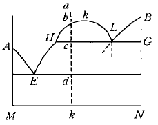
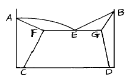

금속재료산업기사 (2003-08-31 기출문제)
1과목: 금속재료
1. 탄소0.45∼1.10% 범위의 강으로 830∼860℃에서 유냉시키고 450∼540℃에서 뜨임하여 얻는 스프링강의 조직명은?
- 오스테나이트
- 페라이트
- 솔바이트
- 마텐자이트
(정답률: 63%)

2. 형상기억 합금은 금속의 어떤 성질을 이용한 것인가?
- 탄성변형
- 마텐자이트변태
- 질량효과
- 확산
(정답률: 70%)
3. 섬유강화 초합금의 기호로 맞는 것은?
- FTA
- PGA
- FRS
- PRH
(정답률: 60%)
4. 연청동(leaded brass)에 대한 설명 중 틀린 것은?
- 주석청동에 납을 첨가한 것이다.
- 조직의 미세화를 위하여 Ti, Zr 등을 첨가한다.
- 연청동은 윤활성이 우수하다.
- 취성이 우수하나 베어링 합금에는 적합하지 않다.
(정답률: 82%)
5. 고 기능성 박막제조방법이 아닌 것은?
- 진공증착법
- 스파트링(sputtering)법
- 이온 플레이팅(ion plating)법
- 질화법
(정답률: 77%)
6. 적은 절삭깊이, 적은 이송량, 저속 절삭에서는 고성능을 발휘하며 자동선반, 정밀보링, 리머, 엔드밀 등으로 사용되는 초경합금은?
- 비금속 피복합금
- 초미립 초경합금
- 점결소성 합금
- 주철-구리계 합금
(정답률: 87%)
7. 자동차부품, 시계부품 등에 사용되는 쾌삭강에서 절삭성을 높이기 위해 첨가 하는 원소가 아닌 것은?
- 황(S)
- 납(Pb)
- 철(Fe)
- 인(P)
(정답률: 32%)
8. 베어링 합금이 갖추어야 할 조건 중 틀린 것은?
- 충분한 점성과 인성이 있을 것
- 마찰계수가 적을 것
- 저항력이 클 것
- 열전도율이 작을 것
(정답률: 50%)
9. 금속의 결정격자 단위포의 크기는?
- 10-2㎝
- 10-3㎝
- 10-8㎝
- 10-12㎝
(정답률: 80%)
10. 인장시험곡선 즉 응력변형선도가 이루는 면적이 클수록 증가하는 성질은?
- 취성
- 인성
- 경도
- 강도
(정답률: 69%)
11. 다이캐스팅(die casting)용 아연(Zn)합금으로 적당한 것은?
- Muntz-metal
- Delta-metal
- ZAMAK 3
- SAP
(정답률: 50%)
12. 탄소강 중 인(P)의 영향으로 가장 옳은 것은?
- 주조성 개선
- 적열취성의 원인
- 용접성 저하
- 상온취성의 원인
(정답률: 80%)
13. 화폐(동전), 열교환기, 탄화외피 등으로 많이 사용 되는 큐우프로니켈(cupronickel)합금의 Ni 함유량은?
- 10 ∼ 30%
- 40 ∼ 50%
- 60 ∼ 70%
- 80 ∼ 90%
(정답률: 54%)
14. 소성가공성이 가장 양호한 결정격자는?
- BCT
- BCC
- FCC
- CPH
(정답률: 74%)
15. 강을 담금질 한 후 과포화상태의 원자가 석출하면서 경도의 변화가 특히 현저하게 높아지는 현상은?
- 시효경화
- 안전경화
- 표면경화
- 압축경화
(정답률: 89%)
16. 입방정계의 결정격자와 관련이 없는 것은?
- 복잡입방격자
- 단순입방격자
- 체심입방격자
- 면심입방격자
(정답률: 알수없음)
17. 금속의 동소 변태 설명이 옳지 않은 것은?
- 서로 다른 상태로 존재하는 동일원소의 두 고체를 동소체라 한다.
- 동소변태를 격자변태라고도 한다.
- 동소변태는 금속내부에서 생기는 변태이므로 변태점을 경계로 하여 성질이 변화한다.
- 동소변태에서는 성질의 변화가 일정한 온도 범위내에서 점진적이고 연속적으로 변화한다.
(정답률: 53%)
18. 소결자기재료 중 소결금속 자석 재료(alnico)의 표준 조성은?
- Al - Fe - Ni - Co
- Al - Mn - Ni - Cu
- Al - Ni - Cu - Zn
- Al - Bi - Au - Sn
(정답률: 74%)
19. 어떤 탄소강의 상온조직을 관찰한 결과 30%의 Pearlite와 70%의 Ferrite로 나타났다. 이 강의 탄소 함유량(%)은? (단, 공석점의 C 함유량은 0.8%임 )
- 0.06
- 0.24
- 0.48
- 0.96
(정답률: 64%)
20. 가공경화에 의해 발생된 내부응력의 원자배열 상태는 변하지 않고 감소하는 현상은?
- 회복
- 탄성
- 재소성
- 질량경화
(정답률: 67%)
2과목: 금속조직
21. 고체상태에서 철의 동소체(allotropy)와 관련이 없는 것은?
- γ- Fe
- α- Fe
- δ- Fe
- θ- Fe
(정답률: 74%)
22. 순금속 M 과 N 이 액체상태에서 완전히 균일한 상을 형성하지 못하고 2상으로 분리되는 경우의 상태도에서 나타나는 반응은?

- 공석반응
- 편정반응
- 포정반응
- 재융반응
(정답률: 37%)
23. 인상전위(edge dislocation)의 설명 중 가장 적합한 것은?
- 전위선이 Burger's vector와 평행인 전위
- 전위선이 Burger's vector와 직각인 전위
- 전위면이 Burger's vector와 평행인 전위
- 전위면이 Burger's vector와 직각인 전위
(정답률: 50%)
24. 철강재료의 조직 중 고용체는?
- 펄라이트
- 오스테나이트
- 시멘타이트
- 레데뷰라이트
(정답률: 60%)
25. 용질원자와 칼날전위의 상호작용을 무엇이라고 하는가?
- Oxidation pinning
- Cottrell effect
- Frank-read source
- Peierls stress
(정답률: 72%)
26. 전이온도(transition temperature)를 옳게 설명한 것은?
- 저온도에서 불규칙상태의 고용체를 급속히 가열하면 불규칙 격자가 형성되기 시작하는 온도
- 고온도에서 불규칙상태의 고용체를 천천히 냉각하면 규칙격자가 형성되기 시작하는 온도
- 저온도에서 불규칙상태의 고용체를 급속히 가열하면 규칙격자가 형성되기 시작하는 온도
- 고온도에서 규칙상태의 고용체를 천천히 냉각하면 불규칙격자가 형성되기 시작하는 온도
(정답률: 62%)
27. 강에서 α-마텐자이트(martensite)의 격자구조는?
- 체심정방격자
- 면심정방격자
- 저심입방격자
- 조심입방격자
(정답률: 36%)
28. 냉간가공에서 인발가공으로 철사 등에 생기는 1 차원적인 집합조직을 무엇이라고 하는가?
- 확산조직
- 산화조직
- 응력조직
- 섬유조직
(정답률: 53%)
29. 강의 물리적 성질을 설명한 것 중 옳지 않은 것은?
- 비중은 탄소량의 증가에 따라 감소한다.
- 열전도도는 탄소량의 증가에 따라 감소한다.
- 전기저항은 탄소량의 증가에 따라 증가한다.
- 탄소강은 일반적으로 자성을 띄고 있지 않다.
(정답률: 91%)
30. 다음 중 포정 반응식은?
- 액상(L) ↔ 융체[A] + 융체[B]
- 고용체[γ] ↔ 고용체[α ] + 고용체[β]
- 고용체(α) + 융체(E) ↔ 고용체(β)
- 액상(L) ↔ 고용체[α] + 액상(L2)
(정답률: 50%)
31. 재료의 강도를 높여주지 못하는 처리는?
- 냉간가공
- 열간가공
- 합금원소의 첨가
- 결정립의 미세화
(정답률: 50%)
32. 금속에 적용할 수 있는 상률(phase rule)로써 맞는 것은? (단, 응축계 상율이며 F : 자유도, C : 성분, P : 상)
- F = C + P - 1
- F = C + P - 2
- F = C - P + 1
- F = C - P + 2
(정답률: 45%)
33. 강을 담금질한 후 템퍼링할 때 까지의 조직의 변태 중 틀린 것은?
- Austenite → Martensite
- Martensite → Fine pearlite
- Pearlite → Cementite
- Fine pearlite → Medium pearlite
(정답률: 42%)
34. 시멘타이트의 자기변태점은?
- A0
- A1
- A2
- A3
(정답률: 45%)
35. 규칙-불규칙 변태의 성질 중 일반적으로 같은 조성의 합금에서 전기저항은 어떻게 되는가?
- 규칙 합금이 불규칙 합금보다 작다.
- 규칙 합금이 불규칙 합금보다 크다.
- 규칙 합금과는 무관하다.
- 항상 일정하다.
(정답률: 39%)
36. 탄소함량이 가장 적은 조직은?
- 시멘타이트
- 페라이트
- 펄라이트
- 마텐자이트
(정답률: 84%)
37. 면심입방격자에서 단위격자에 속하는 원자수는?
- 2
- 4
- 6
- 8
(정답률: 83%)
38. 부분 고용체형 상태도에서 공정점은?

- A
- C
- D
- E
(정답률: 79%)
39. 강의 A1변태를 바르게 설명한 것은?
- 공석 변태를 말한다.
- 순철의 경우 768℃에서 일어난다.
- γ조직이 α 조직으로 변하는 공정 변태이다.
- 자성이 급변한다.
(정답률: 55%)
40. α 철을 조직학상으로 무엇이라고 부르는가?
- 시멘타이트
- 오스테나이트
- 펄라이트
- 페라이트
(정답률: 75%)
3과목: 금속열처리
41. 냉간가공용 합금 공구강(STD)의 템퍼링 온도에서 일반적으로 내마모성을 중요시 할 때의 템퍼링 온도는?
- 150∼200℃
- 500∼550℃
- 750∼800℃
- 850∼900℃
(정답률: 24%)
42. 구리의 재결정 풀림 온도(℃)로 가장 적합한 것은?
- 100∼200
- 300∼400
- 500∼700
- 800∼1000
(정답률: 50%)
43. 열처리의 목적으로 옳지 않은 것은?
- 경도를 높이기 위하여 담금질 하였다.
- 담금질 후 인성을 증가시키고 취약해지는 것을 막기 위해 템퍼링 하였다.
- 결정립의 미세화, 방향성 증가, 편석제거, 균일상태로 하기 위해 응력 증가의 어닐링을 하였다.
- 조직의 연화와 기계 가공성을 적당한 상태로 만들기 위해 어닐링 하였다.
(정답률: 67%)
44. 고주파 열처리법에 의해 발생될 수 있는 현상의 설명이 틀린 것은?
- 탄소 함유량은 0.3%이하이어야 하고 이 이하의 탄소%에서는 소재의 경도 HV가 500 이하는 곤란하다.
- 탄소함유량이 0.4%이상인 경우는 고주파 열처리전에 탄화물을 구상화처리 한다.
- 고주파 열처리품의 경화층에서 발생되는 균열은 경화층이 얕아질수록 균열이 발생되기 쉽다.
- 고주파 열처리품은 퀜칭작업 후 자연균열을 방지하기 위하여 즉시 저온 템퍼링을 실시하여야 한다.
(정답률: 알수없음)
45. 용체화 처리 후 인공시효한 상태의 알루미늄 합금의 질별기호는?
- T6
- T3
- T2
- T1
(정답률: 60%)
46. 열처리로의 연속조업 방법에 의한 분류가 아닌 것은?
- 푸셔(pusher)형
- 전로(linz donawitz)형
- 컨베이어(conveyor)형
- 스트렌드(strand)형
(정답률: 82%)
47. 0.6%C 이하의 탄소강은 C%에 의하여 경도를 측정할 수 있다. 0.5%강을 담금질 했을 때 담금질경도(HRC)와 임계담금질경도(HRC)는?
- 45, 36
- 50, 40
- 55, 44
- 60, 48
(정답률: 24%)
48. 저탄소강 대형품에 대한 침탄열처리의 설명이 틀린 것은?
- 1차 담금질의 목적은 내부 결정립의 미세화이다.
- 150∼200℃ 범위에서 저온 뜨임을 한다.
- 2차 담금질의 목적은 인성과 연성의 증가이다.
- 고온 장시간의 가열로 결정립이 조대화한다.
(정답률: 63%)
49. 철강의 표면에 Si를 침투 확산시켜 내식성을 향상시키는 것은?
- 크로마이징(chromizing)
- 보오론나이징(boronizing)
- 실리코나이징(siliconizing)
- 카로라이징(colorizing)
(정답률: 59%)
50. 1100℃에서 조업한 부탄가스의 변성에 의한 RX 가스의 탄소포텐샬을 계산할 때 어느 성분을 직접 측정하여 탄소포텐샬을 산출하는가?
- SO2
- CO2
- N2
- NO2
(정답률: 74%)
51. 담금질 후 탈탄이 발생하였을 때 현미경조직 관찰을 하면 탈탄층은 주로 어떤 조직으로 나타나는가?
- 마텐자이트
- 페라이트
- 베이나이트
- 시멘타이트
(정답률: 34%)
52. 기름냉각 탱크 온도(60∼80℃)가 계속해서 올라갈 때 부대 설비의 결함으로 가장 옳은 것은?
- 열교환기 및 배관이 막혀서
- 승강 장치가 원활히 운전되지 않아서
- 분사 장치가 없어서
- 교반 속도가 일정할 때
(정답률: 59%)
53. 구상흑연주철의 제1단 흑연화 열처리에서 동일한 속도로 백선화 한 것은 어느 성분의 첨가량이 많은 쪽이 흑연립수가 많고 미세화 되는가?
- Mg
- Fe
- S
- Sn
(정답률: 50%)
54. 마텐자이트 변태와 관련이 가장 적은 것은?
- 생성개시온도
- 강의 화학성분
- 오스테나이트 결정입도
- 변태시간
(정답률: 30%)
55. 강의 열처리 종류와 냉각속도가 틀린 것은?
- 어닐링 - 서서히
- 노멀라이징 - 약간 빨리
- 담금질 - 빨리
- 전주 - 느리게
(정답률: 54%)
56. Martensite 조직을 얻는 방법의 설명으로 맞는 것은?
- 오스테나이트를 급냉한 후 심냉처리를 한다.
- 오스테나이트를 정상적으로 평형냉각을 한다.
- T T T곡선 Nose 이상에서 오스테나이트를 항온 유지시킨다.
- T T T곡선 Nose 이하에서 오스테나이트를 항온 유지시킨다.
(정답률: 70%)
57. 고주파 경화법에서 경화 깊이를 결정하는 인자로 가장 적합한 것은?
- 유도 전류의 크기
- 발생한 자기장의 크기
- 사용 전류의 주파수
- 고주파 적용 시간
(정답률: 43%)
58. 흑심가단주철의 백선의 흑연화 열처리 중 제1단 흑연화에서 일어나는 반응식은?
- CaCO3 → CO2＋CaO
- Fe3C → 3Fe＋C
- C＋O2 → CO2
- 3Fe＋CO2 → Fe3C＋O2
(정답률: 80%)
59. 강의 항온변태 곡선에서 Ar'와 Ar"사이의 구역에서 열욕(hot bath)중 일정하게 유지한 다음 공냉 또는 수냉 시켰을 때 나타나는 주 조직명은?
- 솔바이트
- 페라이트
- 레데뷰라이트
- 베이나이트
(정답률: 36%)
60. 담금질, 뜨임 등의 일반 열처리와 연삭가공 등이 완료된 강재 부품에 얇은 Fe3O4 산화피막을 형성시키는 방법은?
- 알칼리세척
- 탈지
- 산세척
- 수증기처리
(정답률: 29%)
4과목: 재료시험
61. 정전 작업시 안전조치와 관련이 가장 적은 것은?
- 절연보호구 착용
- 개폐기의 시건장치
- 잔류전하의 방전장치
- 실외 온도 측정
(정답률: 85%)
62. 재료가 변형시에 외부응력이나 내부의 변형과정에서 검출되는 낮은 응력파를 감지하여 공학적으로 이용하는 시험법은?
- 버블법
- 스니퍼법
- 음향방출법
- 후드법
(정답률: 60%)
63. 기계적 시험 중 바르게 설명한 것은?
- 인장시험 방법은 KS B 0802 에 규정되어 있다.
- 연신율 측정을 위해 단면적을 계산한다.
- 인장시험은 아이조드 시험기로 측정한다.
- 단면 수축율은 경도 측정으로 한다.
(정답률: 48%)
64. 재료의 굽힘에 대한 저항력을 측정하는 시험법은?
- 전단 시험
- 비틀림 시험
- 피로 시험
- 굽힘 시험
(정답률: 64%)
65. 브리넬( brinell)경도시험의 설명이 틀린 것은?
- 시험 하중을 누르개 자국의 표면적으로 나눈 값에 비례한다.
- 주 하중시간은 60초가 가장 적당하다.
- 시험은 일반적으로 10∼35℃ 범위에서 한다.
- 시험편의 두께는 누르개 자국 깊이의 8배 이상으로 한다.
(정답률: 53%)
66. 철강재료중 비금속 개재물의 표시방법과 개재물을 짝지은 것 중 잘못된 것은?
- 황화물 개재물 - A형
- 알루미늄 개재물 - B형
- 규산염계 개재물 - C형
- 크롬 산화물계 개재물 - D형
(정답률: 74%)
67. 관재(pipe)의 자분탐상에서 중앙전도체를 사용하여 시험품에 원형자장을 형성하고 그 자력선 방향과 수직관계에 있는 결함을 탐상하는 자화방법은?
- 축이동법
- 타진법
- 수침탐상법
- 전류관통법
(정답률: 50%)
68. 로크웰 경도시험기에서 다이아몬드 원추 누르개의 각(°)과 끝부위의 곡률 반지름(mm)이 맞는 것은?
- 116°, 0.⑤
- 126°, 0.1
- 120°, 0.2
- 136°, 0.5
(정답률: 79%)
69. 금속의 결정구조를 해석하기 위한 X 선 회절 시험의 nλ= 2dsinθ 로 표시되는 법칙은?
- 상사의 법칙(Barba´ s law)
- 밀러의 법칙(Miller´ s law)
- 브라그 법칙(Bragg´ s law)
- 마르텐스의 법칙(Martens law)
(정답률: 50%)
70. 만능 인장 재료 시험기에서 할 수 없는 시험은?
- 인장, 연신시험
- 항복, 단면수축시험
- 단면수축, 연신시험
- 충격, 경도시험
(정답률: 74%)
71. 금속재료시험에서 반복적인 동적하중을 가하여 시험하는 시험방법은?
- 인장시험
- 피로시험
- 굴곡시험
- 압축시험
(정답률: 64%)
72. 금속재료 시험 중 비틀림 시험의 주요한 목적은 비틀림 강도 외에 어떠한 성질을 측정하는가?
- 탄성계수
- 강성계수
- 파단계수
- 압축계수
(정답률: 43%)
73. 인장시험에서 시험편의 물림 장치에 대한 규정에 어긋나는 것은?
- 시험편에 물림 장치가 있어야 한다.
- 시험편이 척(chuck)내에서 파괴되어야 한다.
- 시험 중 시험편은 중심선상에 있어야 한다.
- 물림부에서의 물림힘이 같아야 한다.
(정답률: 67%)
74. 강자성체 재료의 결함부위에 발생하는 누설자장에 의해 결함을 검출하는 비파괴 검사방법은?
- 누설시험
- 초음파 탐상시험
- 자분탐상시험
- 방사선 투과시험
(정답률: 56%)
75. 니켈-크롬(Ni-Cr)강의 템퍼링 취성과 같은 성질은 무슨 시험으로 그 내용을 쉽게 알 수 있는가?
- 인장시험
- 충격시험
- 전단시험
- 굽힘시험
(정답률: 62%)
76. 결정입도 측정시 일정한 길이의 직선을 임의의 방향으로 긋고 직선과 결정립이 만나는 점의 수를 측정하여 직선 단위 길이당의 교차점 수로 표시하는 방법은?
- 표준 비교법
- 헤인법
- 면적 측정법
- 체프리법
(정답률: 70%)
77. 투과도계의 설명 중 맞는 것은?
- 방사선 투과사진의 상질을 나타내는 척도이다.
- 촬영한 투과사진의 대조는 하나 선명도의 기준은 아니다.
- 시험체와 다른 재질을 사용하는 것이 원칙이다.
- 촬영할 때 시험체와 같이 촬영할 필요는 없다.
(정답률: 63%)
78. 주조품의 내부결함 탐상에 적합한 비파괴시험은?
- AE시험
- 액체침투탐상
- 크리프시험
- 방사선투과시험
(정답률: 72%)
79. 크리프 시험에서 크리프곡선의 현상(제1단계 - 제2단계 -제3단계)을 옳게 구분한 것은?
- 감속 크리프 - 가속 크리프 - 정상 크리프
- 감속 크리프 - 정상 크리프 - 가속 크리프
- 가속 크리프 - 정상 크리프 - 감속 크리프
- 정상 크리프 - 가속 크리프 - 감속 크리프
(정답률: 64%)
80. 리벳의 전단시험에 사용되는 전단장치는?
- 인장형 전단장치
- 압출형 전단장치
- 소성변형 전단장치
- 탄성 전단장치
(정답률: 40%)